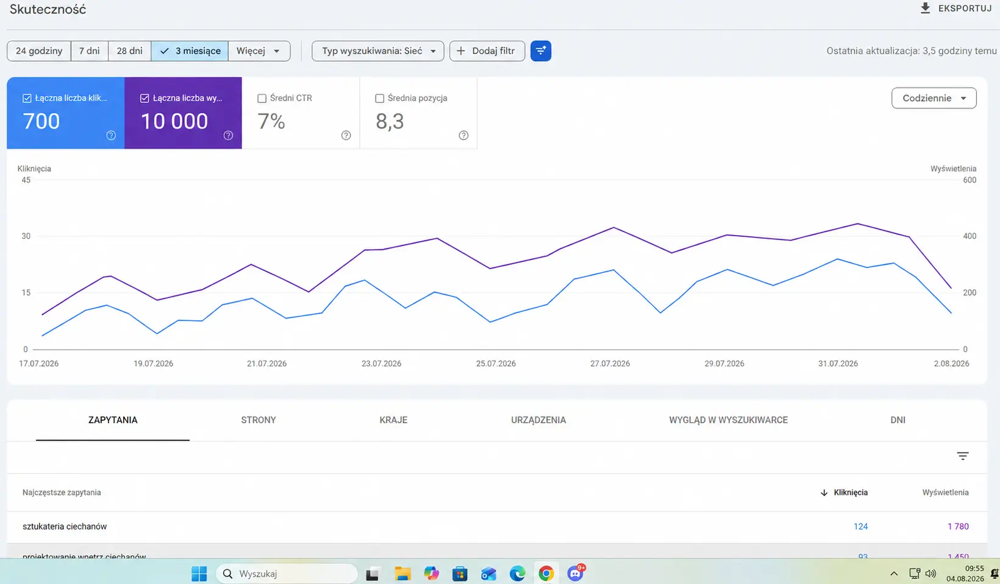

01
Landing page900 zł
Jedna mocna strona dla jednej konkretnej oferty.
- ✓indywidualny projekt
- ✓wersja desktop i mobile
- ✓formularz kontaktowy
- ✓podstawowe SEO
STRONY INTERNETOWE / ŚLĄSK
Projektuję strony, które dobrze wyglądają, jasno pokazują ofertę i prowadzą klienta do kontaktu.


01 / WYBRANE REALIZACJE
Nie wklejam przypadkowych miniaturek. Każdą realizację pokazuję tak, jak faktycznie działa — na laptopie i telefonie.
02 / OFERTA
Projekt, kod, wersja mobilna i publikacja są po mojej stronie. Od początku wiesz, co dostajesz i ile to kosztuje.
Jedna mocna strona dla jednej konkretnej oferty.
Pełna strona firmowa, która porządkuje markę i ofertę.
Kompletna strona przygotowana pod widoczność w Google.
Techniczna optymalizacja, meta dane, sitemap, lokalne frazy i konfiguracja Google Search Console.
Zapytaj o SEO ↗03 / CZEMU JA
Nie przekazuję projektu między handlowcem, grafikiem i programistą. Od pierwszej rozmowy do publikacji masz kontakt bezpośrednio ze mną.
Porozmawiajmy ↗Szybkie decyzje, jasna komunikacja i jedna odpowiedzialność za cały projekt.
Nie podmieniam logo w gotowcu. Kierunek wynika z marki, klienta i celu strony.
Telefon nie jest pomniejszonym desktopem — dostaje własny, dopracowany układ.
Każda sekcja ma wyjaśniać ofertę, budować zaufanie albo prowadzić do kontaktu.
04 / PROCES WSPÓŁPRACY
Prosty proces bez technicznego chaosu. Wiesz, co dzieje się teraz i jaki jest następny krok.
Poznajem firmę, ofertę, klientów i cel strony.
↘Układam strukturę, treści i mocny kierunek wizualny.
↘Buduję desktop i mobile oraz nanoszę poprawki.
↘Podpinam domenę, testuję i uruchamiam gotową stronę.
↘05 / WIDOCZNOŚĆ W GOOGLE
Strona powinna być szybka, czytelna dla Google i przygotowana pod frazy, których naprawdę szukają Twoi klienci.

Przykład wyników projektu z branży wnętrzarskiej.
STRONY INTERNETOWE / LOKALNIE
Tworzę strony internetowe dla firm z Rudy Śląskiej, Katowic, Chorzowa, Zabrza, Bytomia, Gliwic, Świętochłowic, Mikołowa, Tychów, Żor i okolic. Współpracuję również zdalnie z firmami z całej Polski.
06 / BEZPŁATNA WYCENA
Napisz, czym się zajmujesz i jakiej strony potrzebujesz. Wrócę z konkretnym zakresem oraz następnym krokiem.